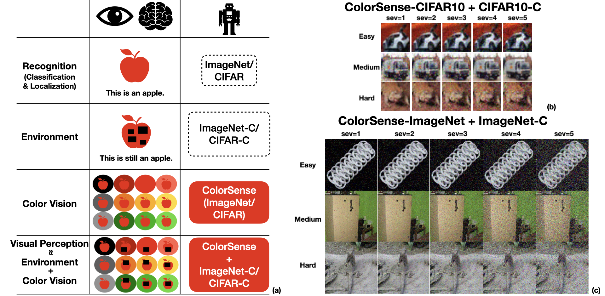
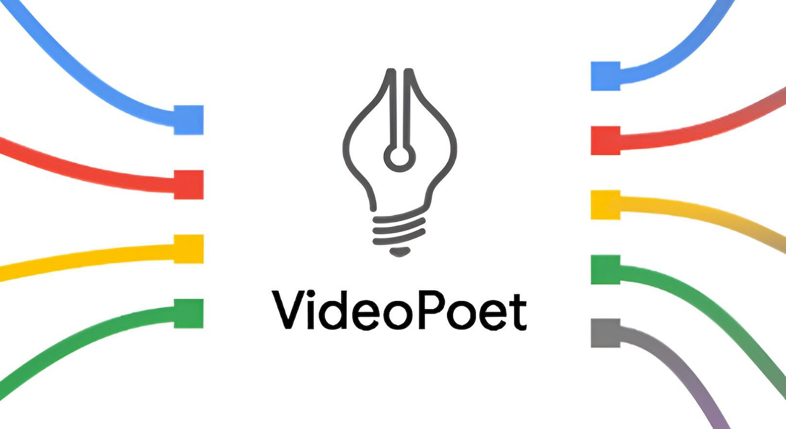

Selected Publications



PhD in Computer Science | Robust AI & Multimodal Reasoning
I am a researcher working at the intersection of trustworthy AI, vision-language models, and agentic systems. My work focuses on building robust and aligned multimodal systems that can reason, verify, and collaborate. I am recently facinated by the design of mechanism and infrastructure of Agent-Agent interactions.
I am a PhD Candidate advised by Prof. Xuezhe Ma at University of Southern California (USC) and I work very closely with Dr. Pin-Yu Chen at IBM Research. During my PhD, I have been fortunate to work at NVIDIA, Google Research (now DeepMind), Lawrence Livermore National Lab, Lilt and Illumina.
Download my latest CV [PDF]
Reviewer for: ICML, NeurIPS, ACL, ICASSP, IJCNN
Teaching: DSCI-553 Foundations and Applications of Data Mining, DSCI-552 Machine Learning for Data Science, CSCI-544 Applied Natural Language Processing
I enjoy backpacking, snowboarding, vintage shopping, music (classical & rock).
Email: mingchac@usc.edu